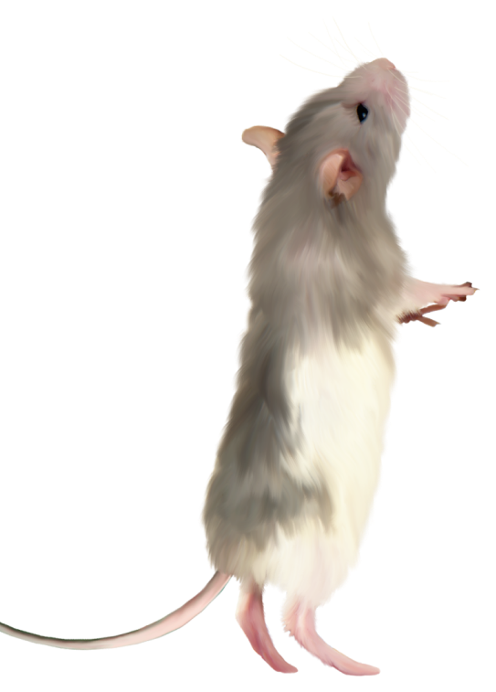

Милые, ласковые и ручные декоративные крысы произошли от обычных диких серых крыс, которые у человека вызывают чувство отвращения, а также определенный страх. Это совсем неудивительно, поскольку дикие крысы снискали дурную славу не только своим поведением, но и способностью разносить различные вирусы и инфекции.
О диких крысах впервые стало известно китайцам и индийцам несколько тысячелетий назад. В 16 веке, по мере развития морской торговли, крысы распространились по всему миру, перебираясь с континента на континент. В 19 веке в Англии этих грызунов начали использовать в боях против собак, предварительно отлавливая их. В этот же период некоторые любители занялись племенным разведением крыс, особенно ручных, белого цвета. Таких ручных грызунов показывали на выставках, кроме этого, белые крысы принимали участие в цирковых представлениях. Некоторые любители домашних животных начали заводить «диковинных» грызунов у себя дома, поскольку они не представляли для человека никакой опасности.
Часть особей использовалась в качестве подопытных животных в различных лабораториях, что практикуется и в наши дни, а часть из них переселилась в дома ученых. Ученые и увидели в крысах достаточно умных и привязанных к человеку животных. Благодаря скрещиванию лабораторных крыс с дикими животными, появились все новые виды и породы домашних декоративных грызунов, которых по сей день можно встретить у различных заводчиков.